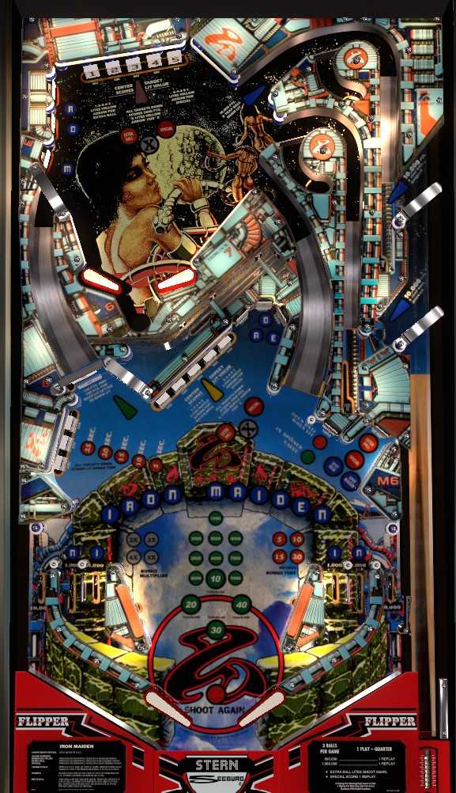

Not to be confused with Iron Maiden: Legacy of the Beast Pro/Premium/Limited Edition (Stern Pinball, 2018).
Collect Iron Maiden letters from the center standup targets, upper left standup targets, and in lanes. The left spinner scores 100 points per spin plus an additional 100 per Iron Maiden letter, up to a maximum of 1,100. One of the two lower right standup targets is lit alternately to triple the next shot to the spinner. 5-bank drop targets raise end of ball bonus; complete a bank to light the opposite bank's center target for a bonus multiplier. Lock balls by shooting shots with lit blue arrows on the upper playfield or plunge, but avoid playing multiball.
A full plunge sends the ball all the way around underneath the upper playfield, where it will be introduced to the lower playfield via the gate next to the lower 5-bank of drop targets. This gate is also where balls go after they drain off of the upper playfield. There are 2 flavors of short plunge that put the ball into a lock lane. Plunging into an unlit lane scores 5,000 points. Plunging into a lit lane scores 10,000 points and attempts to lock the ball for multiball- if there are less than 2 balls in the lock, the ball will be locked, and if there are 2 balls in the lock and Iron Maiden has been spelled, multiball will begin. If a short-plunged ball does not stay in the lock, due to being an unlit lane or there are already being 2 balls in the lock with Iron Maiden not yet spelled, it will be kicked out to the upper playfield.
The upper and lower playfields each have a bank of 5 drop targets, with individual targets labelled 1-2-3-4-5 from left to right. Any target down scores 500 points and a bonus advance. Completing any bank scores 5,000 points and lights the #3 target in the opposite 5-bank for a bonus multiplier. If you complete a 5-bank in order from 1 to 5, the opposite bank #3 target will be lit for extra ball. If you complete a 5-bank in descending order from 5 to 1, the opposite bank #3 target will be lit for a special. You cannot stack multiple lit bonus multipliers on the same bank, so be sure to collect one before lighting another.
Advancing the bonus multiplier to the maximum of 5x lights the back standup target in the lower right for a special.
The letters in Iron Maiden can be collected from various locations on the playfield. The far in lanes spot both Ns, and the near in lanes spot both Is. A, D, and E can be earned from a cluster of 3 standup targets in the center of the table, to the right of the lower playfield 5-bank; these can be dangerous to shoot for, with a return feed likely to center drain. R, O, and M can be earned from standup targets int he upper left of the upper playfield. Collecting any letter in this way scores 1,000 points. You can also spot entire words (Iron or Maiden) by hitting the back standup target in the lower right; this target scores 20,000 points, and alternates whether it is lit for the word Iron or the word Maiden each time a slingshot is triggered.
The spinner positioned at the bottom of the left ramp scores 100 points per spin, plus an additional 100 for each lit Iron Maiden letter, up to a maximum of 1,100 points per spin. The front standup target in the lower right of the lower playfield is lit alternately (based on slingshot hits) for 3x Spinner, which triples the spinner value up to a maximum of 3,300 per spin for the next spinner shot only.
In addition to the ball locks available on the plunge, balls can be locked via the lane at the upper right of the upper playfield when lit. Yet again, this lane is lit alternately based on slingshot hits. Putting a 3rd ball in the lock after Iron Maiden has been fully spelled starts a 3-ball multiball. When multiball is started, the back standup target in the lower right is lit for extra ball, but there are no other multiball-specific scoring features. In fact, starting multiball unlights all Iron Maiden letters and resets the spinner value, so you may wish to avoid starting multiball altogether since there aren't many upsides to it and relighting Iron Maiden letters to build the spinner value back up can be a risk.
Each target down in this bank scores 500 points. Hitting down a target starts a timer that is about 15 seconds long. The faster the 3-bank is completed after the timer starts, the more bonus ball time you are given: 25 seconds of bonus ball if the 3-bank is completed within 3 seconds, decreasing by 5 bonus ball seconds for each 3 seconds that pass. If the 3-bank is not completed within 15 seconds, it resets. Any completion of the 3-bank scores 3,000 points in addition to the bonus ball time awarded.
If a player has earned any bonus ball time, they play their bonus ball immediately after their final turn. The bonus ball timer maxes out at either 30 or 50 seconds depending on game settings. The bonus ball timer does begin counting down while the ball is still in the shooter lane, so be alert. You have unlimited ball save for as long as their is time on the clock during the bonus ball; when time expires, the flippers die and no more points can be scored. End of ball bonus is scored at the end of the bonus ball.
Iron Maiden has a conventional in/out lane setup, but with 2 in lanes on each side instead of 1. All in lanes score 1,000 points. The near in lanes spot the two Is in Iron Maiden, and the far in lanes spot the two Ns. Out lanes only score 10,000 points.
There is a gate in the right out lane that redirects the ball back to the shooter lane. It closes once used or at the end of the ball. To open it, hit the front standup target when it is lit orange; this light is on alternately, based on slingshot hits.
Bonus is advanced once for each drop target knocked down in either 5-bank. The game counts as much as 100,000 points in end of ball bonus, but both the virtual recreation in VPX and footage of a physical machine have shown that the game sometimes only counts the base bonus total modulo 10,000 or 20,000, and I am not sure what causes the error. Base bonus always carries over from ball to ball. Bonus multipliers are earned by completing a 5-bank of drop targets, then hitting the center #3 target in the opposite bank. Max bonus multiplier is 5x. Bonus multiplier is carried over from ball to ball by default, but this can be disabled. There is no mid-ball bonus collect. Maxing out the bonus multiplier at 5x lights the back standup target in the lower right for a special.
Special can be set to score a free game, an extra ball, 100,000 points, or nothing. There does not seem to be a setting that allows extra balls to be converted to points. Extra balls can be disabled, or there can be a limit of 1, 3, or 5 extra balls remaining at any given time.